Dockerizing a node app in Windows 10 Home system
-
Open Ubuntu from Windows Start Menu
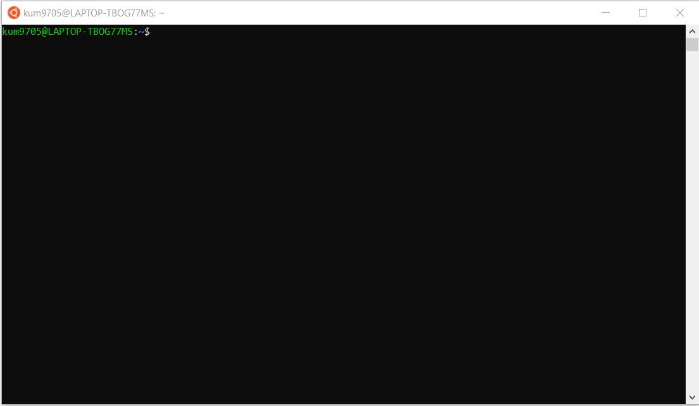
-
Create a directory www in home directory for creating applications.
Create a directory called node in www . You could also create a project
outside Ubuntu and run docker commands
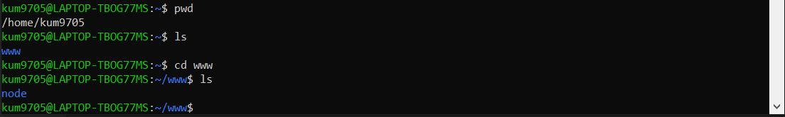
-
Install vscode in your system .Open node project in vscode using
command
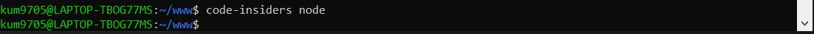
-
After opening the node directory in vscode add these 3 files - 2 are for
node application and 1 Dockerfile to create image and run container
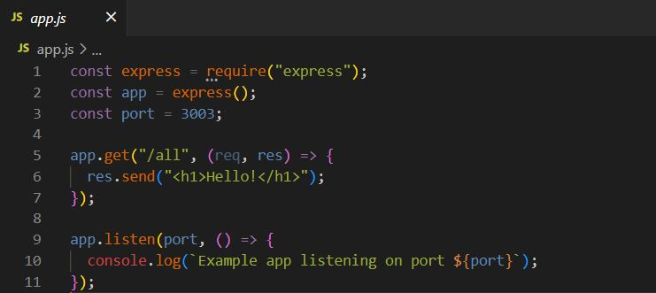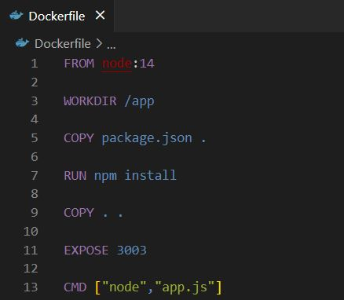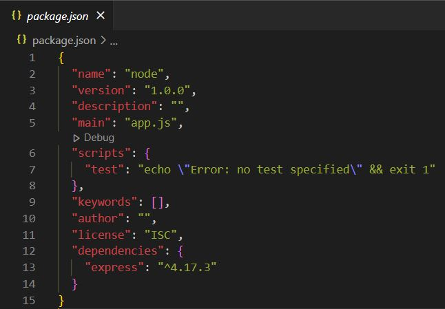
-
Go to terminal and select Ubuntu (WSL). Check docker installed version
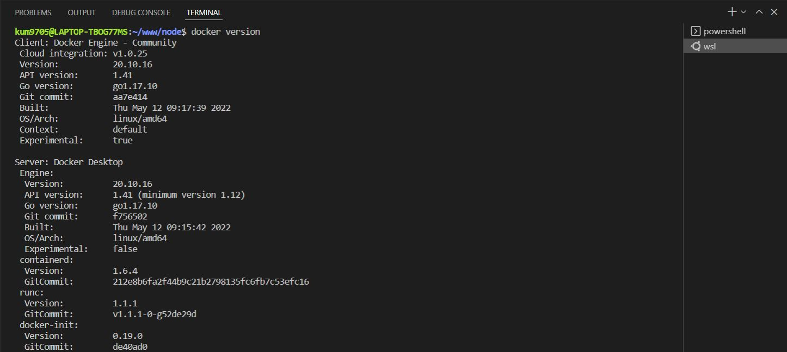
-
Run docker build command to create the image
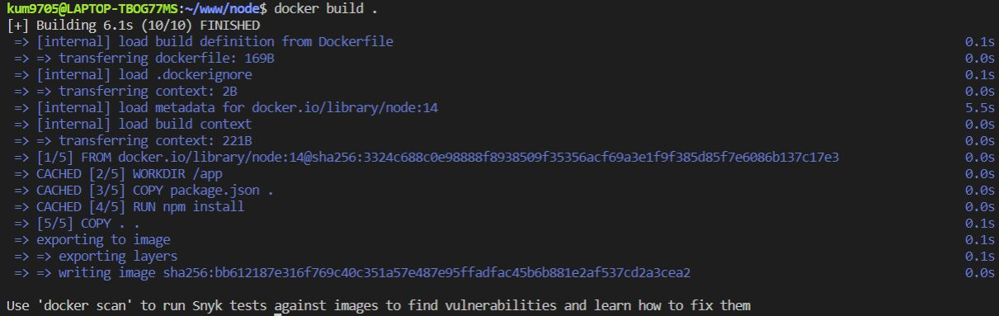
-
Run container using image id
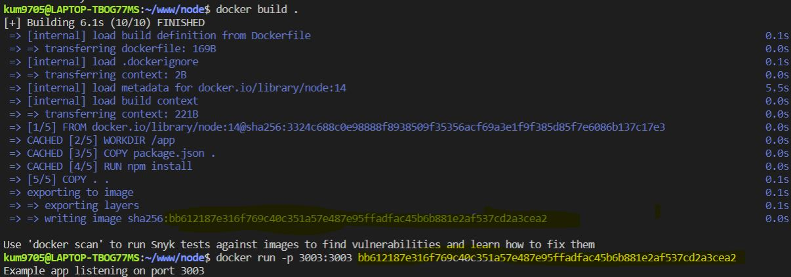
-
Launch from browser
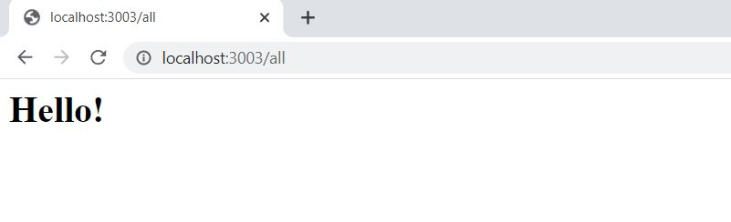
-
Check container status using Docker Desktop . Open Docker desktop - Goto
Images and Containers
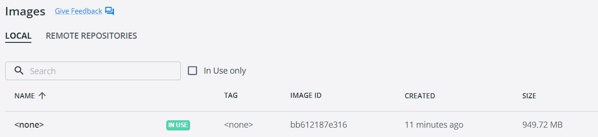
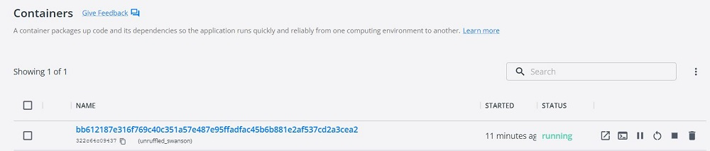
-
Open another Ubuntu (WSL) terminal . Check running containers
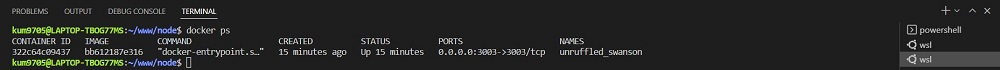
-
Stopping container using NAMES
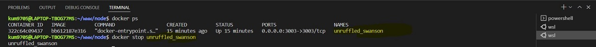
-
Softwares installed in the system to run Docker
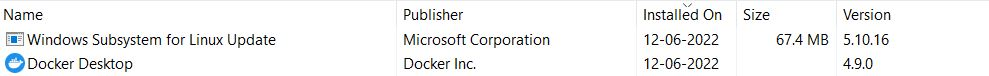
-
Exit Docker Desktop from Windows tray option . Open Ubuntu and run
docker version command
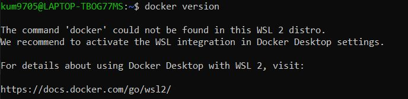
-
Open Docker Desktop . This will start Docker engine . Goto Settings -
Resources - WSL Integration .Enable integration with my default WSL
distro must be checked .
Open Ubuntu terminal and run docker command - It will show client and
server
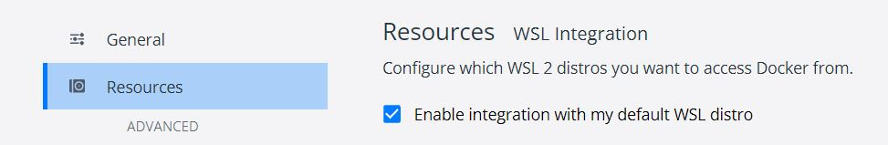
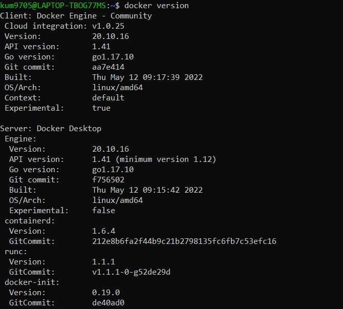
-
Copying files to container without restarting and rebuilding the image.
Make changes to test.py file . copy the file to container using
container name . Start using the same container name . This will reflect
changes done in test.py file. Check processes for the new container that
was created
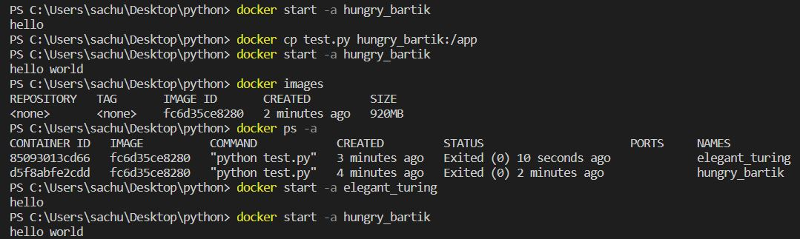